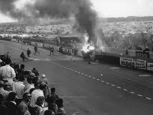
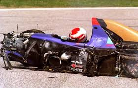
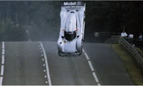

os maoires acidentes da lemans
Acidente de 1955:

O que aconteceu: Em 11 de junho de 1955, o piloto francês Pierre Levegh, da equipe Mercedes-Benz, colidiu com o carro de Lance Macklin.
A tragédia: O impacto fez com que o carro de Levegh decolasse, explodisse e se desintegrasse ao atingir um muro. Destroços, incluindo o motor e partes da carroceria, foram lançados contra a arquibancada lotada.
Acidente de 1986:

O acidente mais grave nas 24 Horas de Le Mans de 1986, e o único fatal, envolveu o piloto austríaco Jo Gartner.
Acidente fatal de Jo Gartner. No início da manhã de domingo, durante a corrida, Na reta Mulsanne. o acintende foi feita por uma falha na caixa de câmbio do Porsche 962 C da equipe Kremer Racing travou as rodas traseiras, fazendo com que o carro desviasse e colidisse com o armco (barreira de metal) a uma velocidade de cerca de 260 km/h, o piloto veio falecer.
Acidente de 1999:

O acidente de Le Mans de 1999 foi uma série de incidentes espetaculares envolvendo os carros Mercedes-Benz CLR, que levantavam voo na pista devido a problemas aerodinâmicos. Ao todo, três acidentes ocorreram, forçando a Mercedes a se retirar da corrida e, posteriormente, do endurance